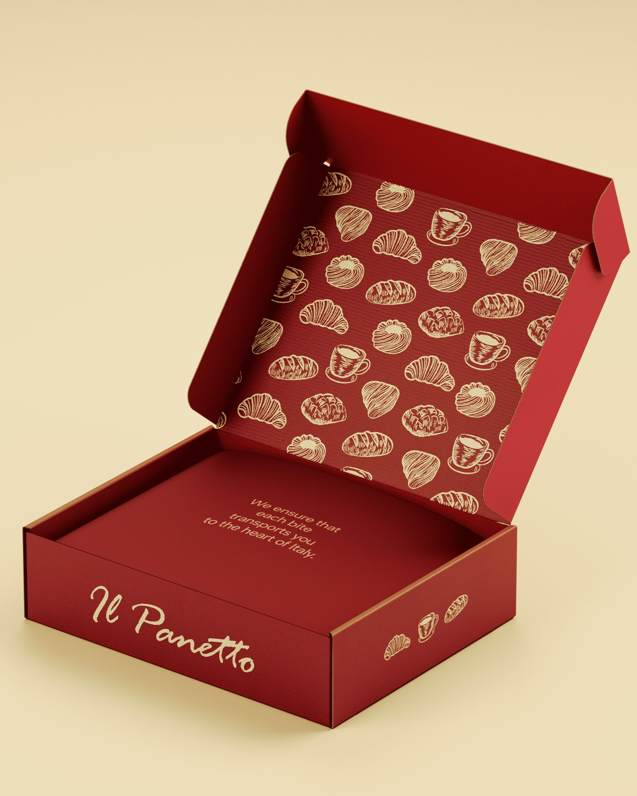
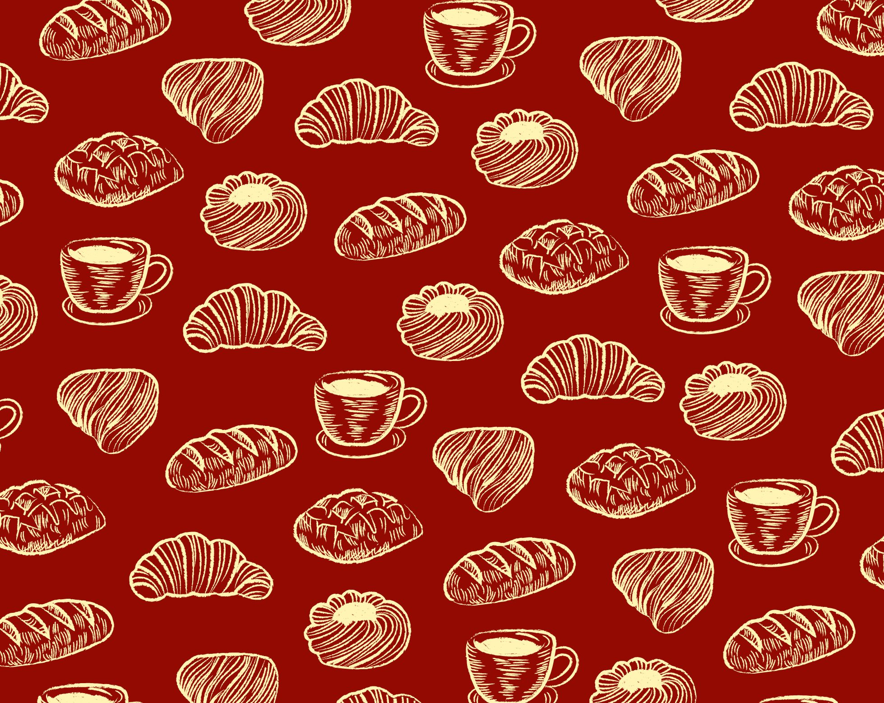
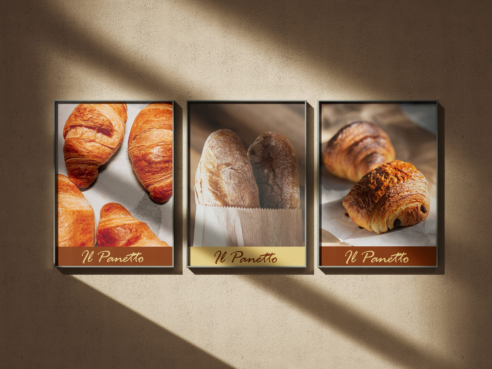

IL PANETTO
Identidad Visual

Una panadería italiana que busca transmitir el calor y la cercanía de la tradición; una estética que invita a quedarse.
Retícula y contraste
La propuesta combina una paleta de colores cálidos y neutros para evocar lo artesanal, lo cotidiano y lo familiar. Busca reflejar el alma de una panadería donde cada detalle, como cada pan, está hecho con dedicación.
Una grilla de base sostiene la seriedad de la estructura, pero se rompe sutilmente con la calidez del color, equilibrando lo moderno y lo tradicional sin perder el foco en el producto.

Cada detalle, como cada pan, está hecho con dedicación.
La marca en el espacio
